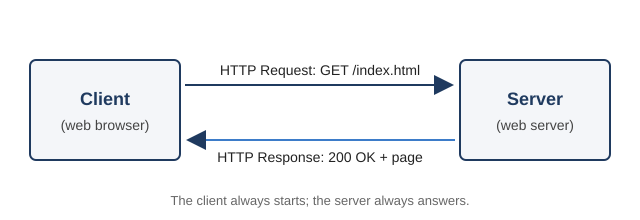

HTTP Fundamentals
HTTP is an application-layer protocol. It is an agreed set of rules for how a client (usually a web browser or app) asks a server for a resource, and how the server answers. A resource can be a web page, an image, a video, or data for an app.

An everyday example: think of a restaurant. The customer (client) gives an order to the waiter (HTTP), the waiter takes it to the kitchen (server), and then brings back the food (response). If the dish is not available, the waiter explains why, just like a server sending back an error code.
Three important properties
- Client-server: the client always starts the conversation and the server responds.
- Stateless: each request stands alone. The server does not remember earlier requests unless something like cookies is used.
- Extensible: new headers and methods can be added without breaking old ones.
The basic steps
- The user types a URL or clicks a link, and the browser sends a request.
- The server finds or creates the resource.
- The server sends back a status code and the content, and the browser displays it.
Anatomy of an HTTP Request
An HTTP/1.1 request is plain text. Here is an example of what a browser sends when you visit a page:
GET /learn/http HTTP/1.1
Host: www.example.com
User-Agent: Mozilla/5.0
Accept: text/html
Accept-Language: en-US- The first line is the request line. It has the method (GET means "give me this"), the path of the resource, and the protocol version.
- The Host header names the website. Many sites can share one server, so HTTP/1.1 requires this header.
- User-Agent tells the server what software is making the request. Accept and Accept-Language say which content types and languages the client prefers.
- A blank line ends the headers. After it there can be a body, which methods like POST use to send form data.
Anatomy of an HTTP Response
HTTP/1.1 200 OK
Content-Type: text/html; charset=UTF-8
Cache-Control: max-age=3600
<html> ...page content... </html>The status line has the version, a three-digit status code, and a short reason phrase. Content-Type says what kind of data follows, Cache-Control says how long the browser can reuse the copy, and the body is the actual content.
Status codes
Status codes are grouped by their first digit:
| Group | Meaning | Common examples |
|---|---|---|
| 1xx | Informational | 100 Continue, 103 Early Hints |
| 2xx | Success | 200 OK, 201 Created, 204 No Content |
| 3xx | Redirection | 301 Moved Permanently, 302 Found, 304 Not Modified |
| 4xx | Client error | 400 Bad Request, 403 Forbidden, 404 Not Found, 429 Too Many Requests |
| 5xx | Server error | 500 Internal Server Error, 502 Bad Gateway, 503 Service Unavailable |
Fun fact: there is a joke status code, 418 "I'm a teapot", from an April Fools' document published in 1998 (RFC 2324).
HTTP Methods
A method tells the server what action the client wants.
| Method | What it does | Safe? | Idempotent? |
|---|---|---|---|
| GET | Retrieve a resource | Yes | Yes |
| HEAD | Like GET, but only returns the headers | Yes | Yes |
| POST | Send data to be processed, like a form | No | No |
| PUT | Replace a resource with the data sent | No | Yes |
| PATCH | Change part of a resource | No | No |
| DELETE | Remove a resource | No | Yes |
| OPTIONS | Ask which methods the server allows | Yes | Yes |
Safe means the method only reads data and should not change anything on the server. Idempotent means sending the same request many times has the same effect as sending it once. This is why a browser can safely retry a GET but asks before re-sending a POST.
Important Headers and Cookies
Headers are extra information attached to requests and responses. Some important ones:
- Host: which website the request is for.
- Content-Type: the format of the body, like text/html or application/json.
- Cache-Control: rules for storing and reusing responses.
- Authorization: credentials that prove who is asking.
- Location: where to go after a redirect.
- Accept-Encoding: compression the client understands, like gzip.
- Strict-Transport-Security: tells browsers to only use HTTPS for this site.
Because HTTP is stateless, Lou Montulli at Netscape introduced cookies
in 1994. The server sends a Set-Cookie header, the browser stores it, and
sends it back in a Cookie header on later requests. This is how websites
remember logins and shopping carts.